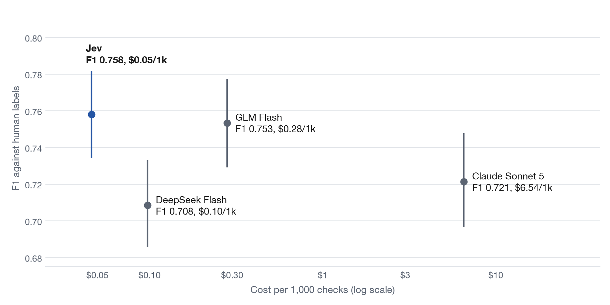

Headline results
Sensitivity analyses
Excluding convention-dependent labels
Unscored responses counted as wrong
Charts
Case explorer
Cases where untuned Jev and Claude disagree, or where both are wrong against the human label.
A ragverdict benchmark, September 2026
I tested TypeSafe's Jev, a yes/no decision model that costs about five cents per thousand checks, against three LLM judges: Claude Sonnet 5, DeepSeek Flash and GLM Flash. The job was to spot hallucinations in 2,666 RAG answers from RAGTruth, where trained annotators had marked every unsupported claim. Here is what held up.

Jev works as a cheap, fast and consistent first-pass judge, if you set its cutoff from a labeled sample of your own data instead of trusting the default. Keep an LLM judge where you need a written explanation, or where subtle, fluent hallucinations are the ones that hurt.
The settings and twelve predictions were committed before any test answer was judged, and the benchmark refuses to run on the test split without that commit. Cutoffs were tuned on 600 training answers that share no source documents with the test set. Confidence intervals resample whole source documents, because about six answers share each one. A separate script with no shared code recomputes the headline numbers, and every raw prediction is published.
Limits: one dataset, written by 2023-era models; one yes/no question per answer; and the pre-registration is a local commit, not an independent timestamp.
Everything below is read from the published data: every judge with confidence intervals, the two pre-registered tests, sensitivity checks, the remaining charts, and a case explorer of the answers where Jev and Claude disagree.
Cases where untuned Jev and Claude disagree, or where both are wrong against the human label.